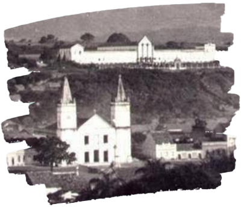

A terra dos verdes canaviais,
Barbalha, no Ceará, é conhecida como a terra dos verdes canaviais, devido à monocultura de cana de açúcar que foi a principal atividade econômica da região durante o período da colonização.
Barbalha é um município localizado na Região Metropolitana do Cariri, a 504 quilômetros da capital Fortaleza. A cidade é vizinha de Juazeiro do Norte e possui um centro histórico com edificações do século XVIII e XIX.Tem como padroeiro Santo Antônio, o casamenteiro, e apresenta vários prédios e locais históricos, preservando nuances coloniais.
A cidade, situada na Chapada do Araripe, servia como um verdadeiro oásis na paisagem árida do Sertão Nordestino e atraiu a instalação de engenhocas de rapadura, de onde baseou sua economia os primeiros séculos de sua história, no século XIX passou a abrigar alguns empreendimentos comerciais e no século XX assumiu a sua vocação no setor de serviços.

Em 1926, passaram pela cidade Lampião e seu bando, que estavam a caminho de Juazeiro do Norte para integrar o Batalhão Patriótico. Por esta ocasião conversou com líderes locais e jornalistas.

Em 30 de agosto de 1838 é criado pela lei provincial n° 130 o distrito de Barbalha, subordinado ao município do Crato. Em 17 de agosto de 1846, data de sua emancipação política, o então distrito é desmembrado do Crato e elevado à condição de vila com a denominação de Barbalha, pela lei provincial nº 374. Em 30 de agosto de 1876 foi elevada à categoria de cidade pela lei nº 1740. Contava apenas com o distrito sede (Barbalha)